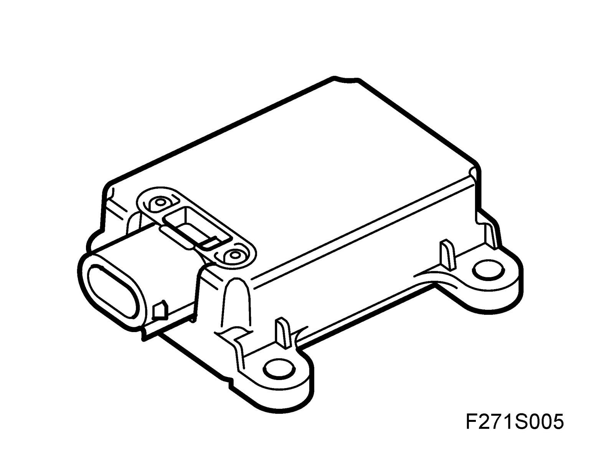
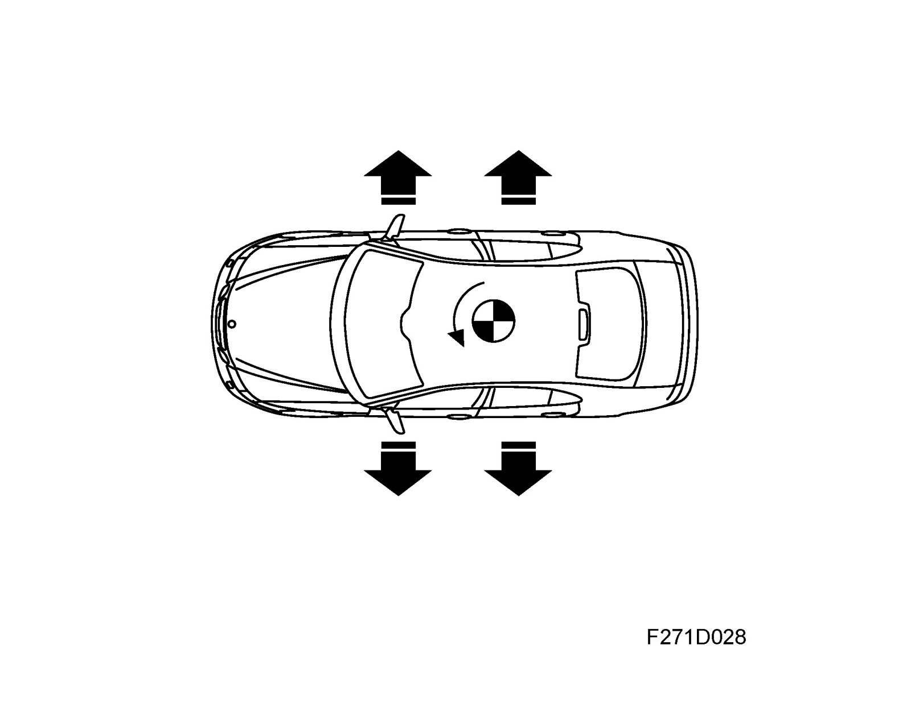
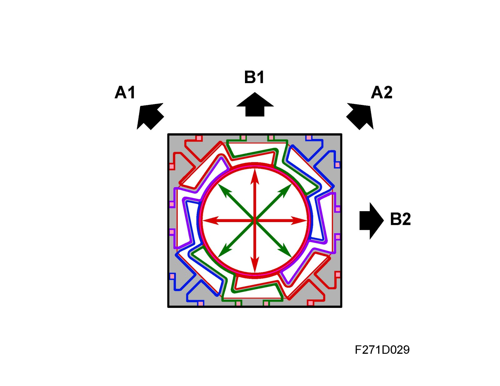
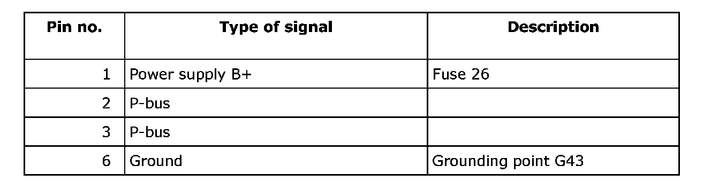
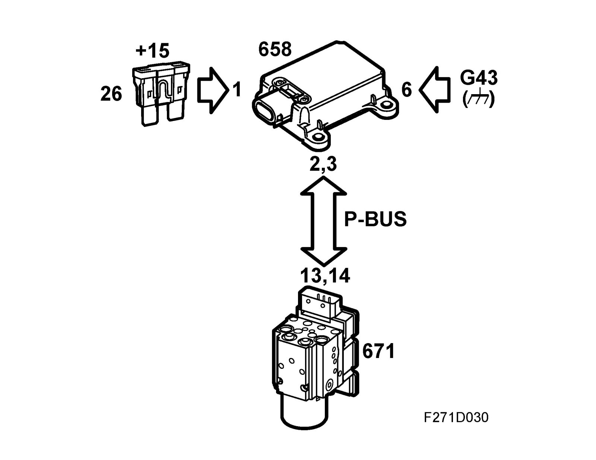
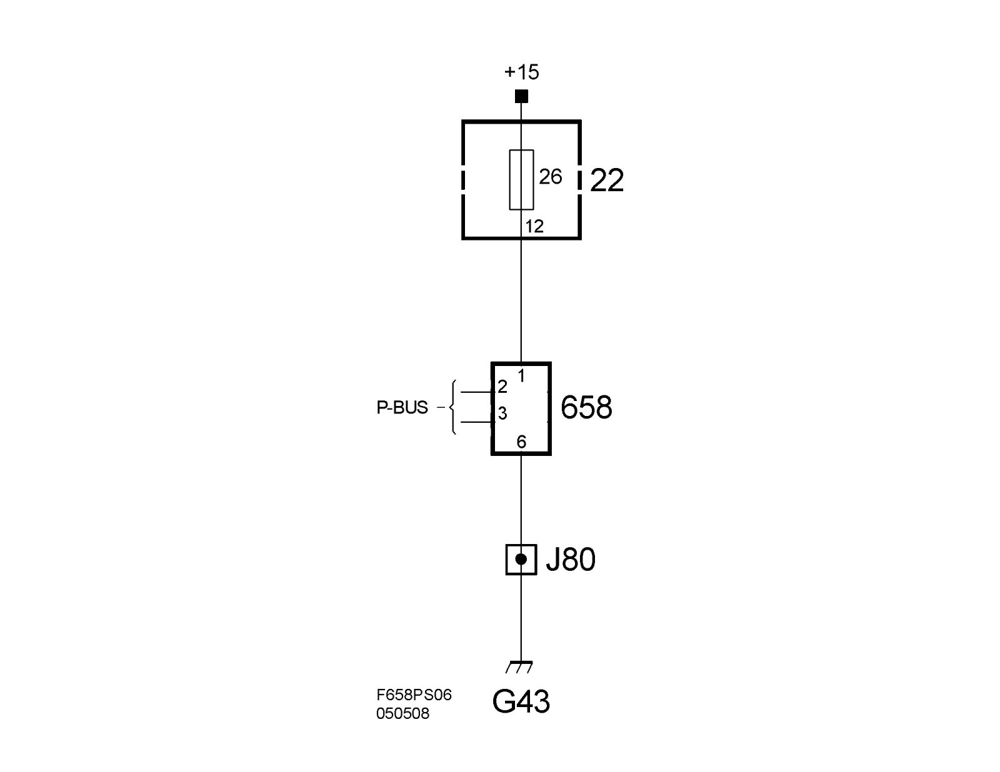

Yaw Rate Sensor: Description and Operation
Yaw sensor (658)On cars equipped with ESP
Location

Yaw sensor (658)
Main use

The sensor is used to measure the physical forces of the yaw rate acceleration and lateral acceleration of the vehicle. On cars with B284 engine and manual gearbox there is an additional sensor element that measures longitudinal acceleration. The incline of the hill can be detected with this signal.
Type

The sensor comprises a combined micromechanical yaw rate sensor and lateral acceleration sensor.
A hermetically sealed metal housing protects the components from being affected by its surroundings.
The centre of the combined micromechanical sensor consists of a silicone ring gyro containing three layers of silicone with intermediate isolation of thin glass, eight radial spokes which detect rotation movement and a capacitive element which detects lateral acceleration movements.
Connection (not for control module)

Wiring diagram
^ Overview

^ +30 and ground
